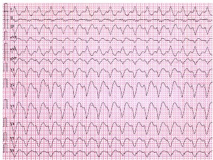
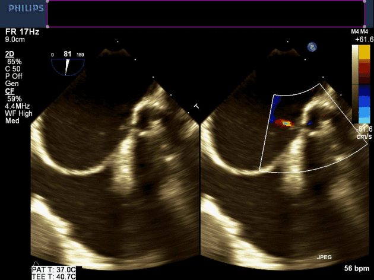
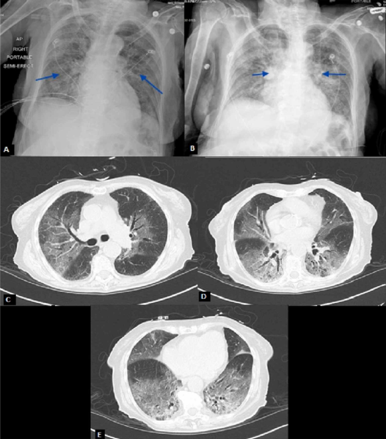

Medical Imaging
ECG: Mild Concentric left ventricular hypertrophy and mild left atrial enlargement
Medical Imaging
- Rapid choatic atrial discharging
- No regularity in the P-wave or atrial morphology
- Irregularly irregular and unpredictable QRS to QRS coupling intervals

- Echocardiogram done in last month-showed disappearance of atrial reverse flow, a decrease in systolic flow with a greater diastolic than systolic flow, a prolonged onset of systolic flow and the appearance of an early systolic reverse flow.
- A repeat echocardiogram performed in the office demonstrates an ejection fraction of 20% with global hypokinesis but normal left ventricular systolic and diastrolic dimensions with normal pulmonary arterial systolic presure.

- Isotropic voxel data from CCT scan can be reformatted into transverse and coronal multiplanar images.
- 3D volumn rendering image of CCT reveals stereoscopic view inside LA chamber and PV ostium.
- Typical anatomy comprises four PVs with seperate ostia.
- Atypical PV anaotmy mainly comprises common ostia for left PVs and additional right middle PV (arrow).

- Assessment of left atrial appendage: A second scan to differentiate between true thrombus and pseudothrombus.
- The latter is identified by the gain in contrast in the delayed second scan, its mean density, and the similarity of its density to that of the rest of the atrium.

Genomics
Single gene KCNQ1 inherited in an autosomal dominant pattern
Genomics
- A 54-year-old male presents for his annual physical examination and notes increasing fatigue over the prior 3 months.
- His history is notable for longstanding, but now well-controlled, systolic hypertension.
- The remainder of his examination is completely normal with no clinical evidence of right- or left-side congestive heart failure.
- He was afebrile, tachycardic (140 bpm), with moist skin, and his physical examination revealed no significate signs from the lungs and the abdomen.
- The patient has family history of coronary artery disease.
- His review of systems is notable only for fatigue without complaint of snoring, chest pain, palpitations, weight gain or loss, orthopnea, dyspnea, peripheral edema or syncope.

Current Diagnosis
History of: Hypertension, Heart Disease, Thyroid Disease, Hyperlipidemia
Current Diagnosis
- A 54-year-old male presents for his annual physical examination and notes increasing fatigue over the prior 3 months.
- His history is notable for longstanding, but now well-controlled, systolic hypertension.
- The remainder of his examination is completely normal with no clinical evidence of right- or left-side congestive heart failure.
- He was afebrile, tachycardic (140 bpm), with moist skin, and his physical examination revealed no significate signs from the lungs and the abdomen.
- The patient has family history of coronary artery disease.
- His review of systems is notable only for fatigue without complaint of snoring, chest pain, palpitations, weight gain or loss, orthopnea, dyspnea, peripheral edema or syncope.